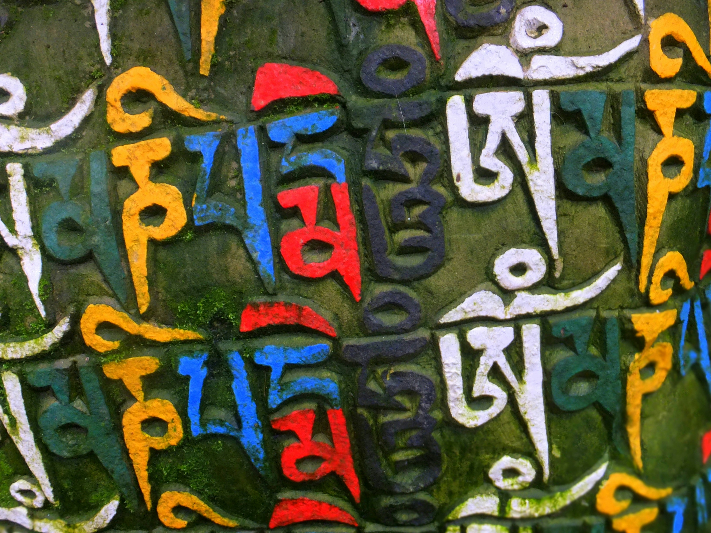
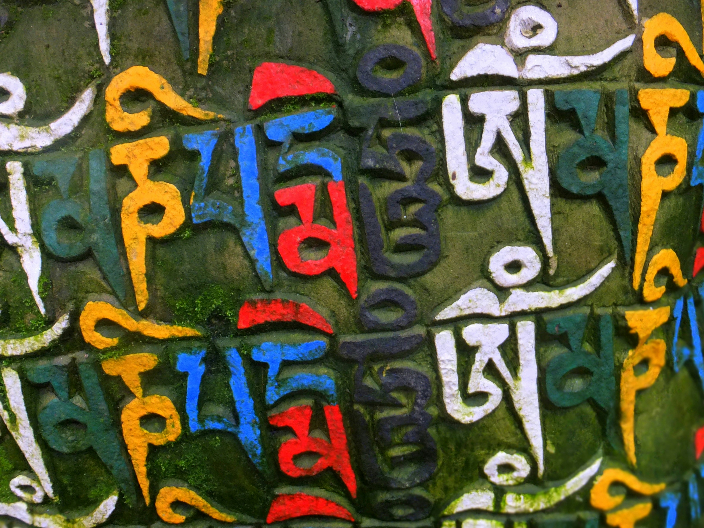
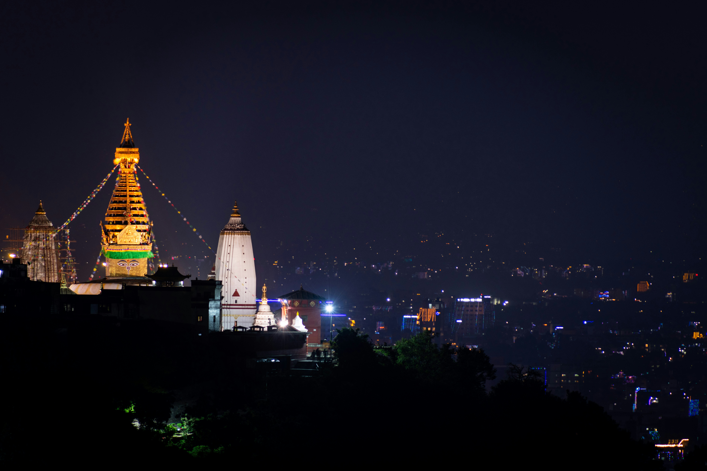
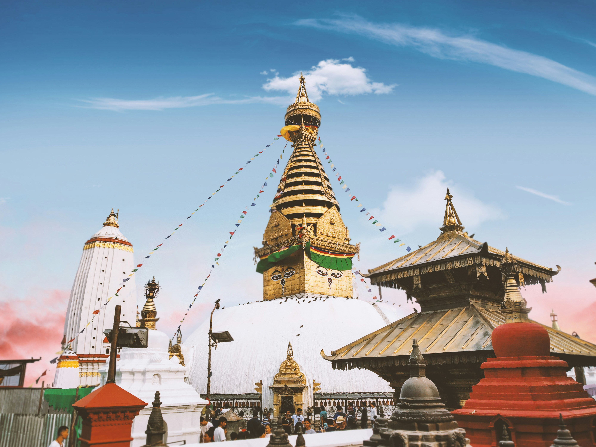
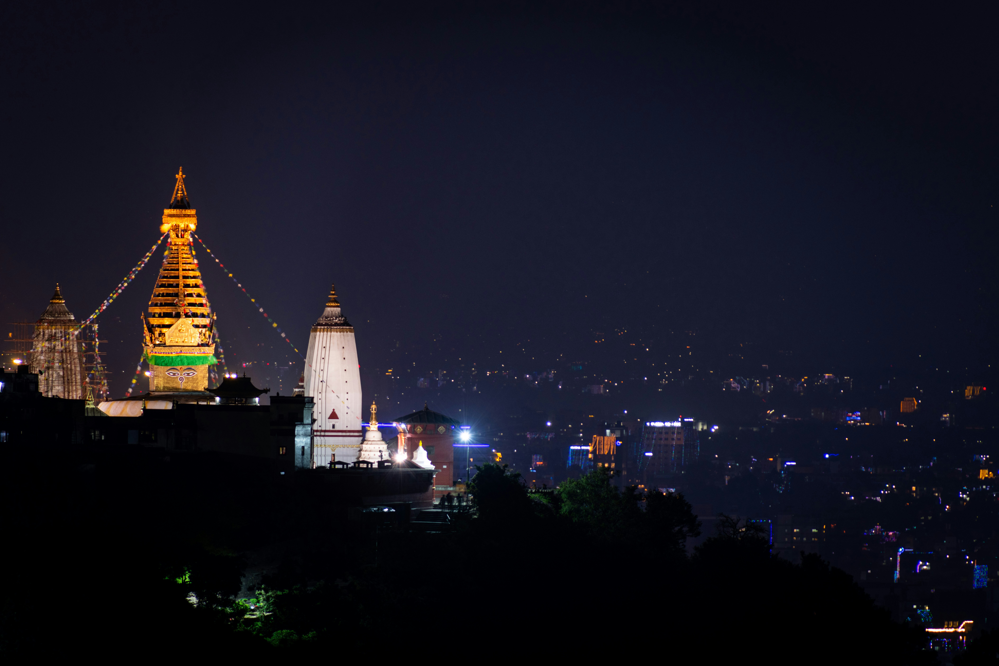
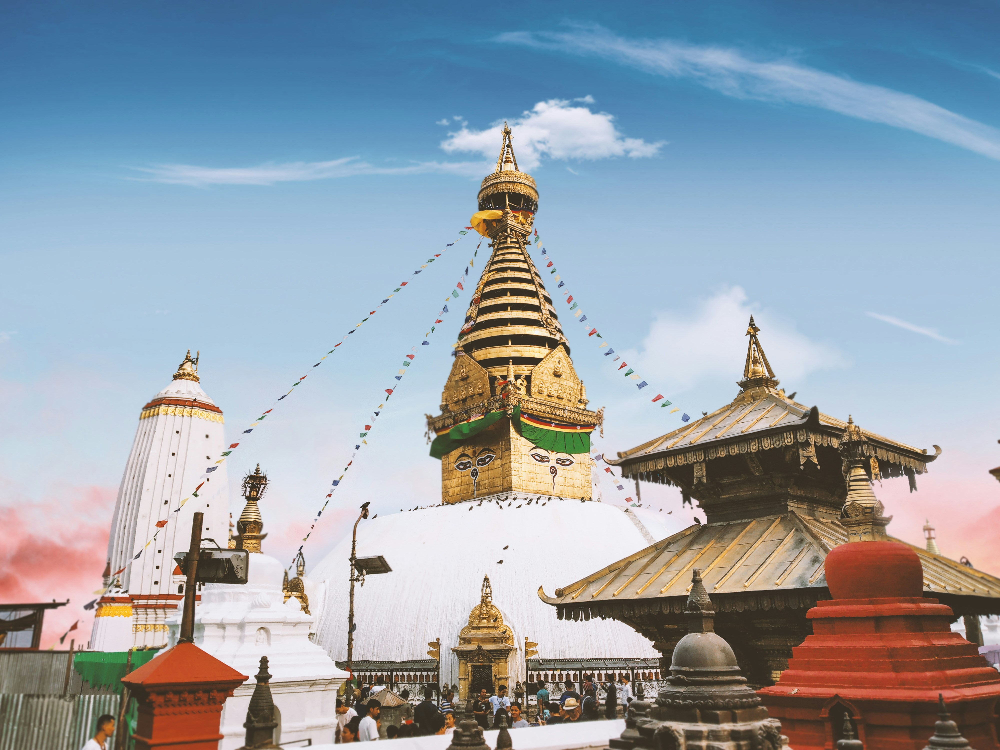
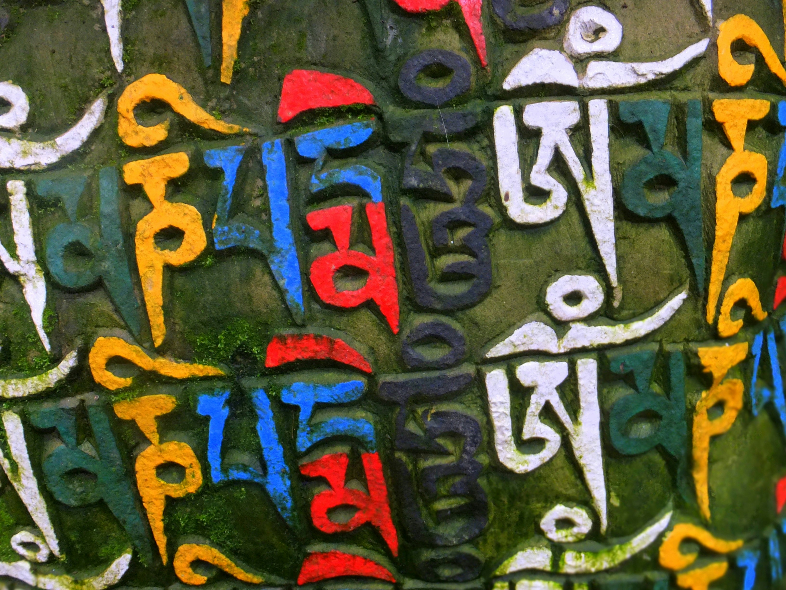
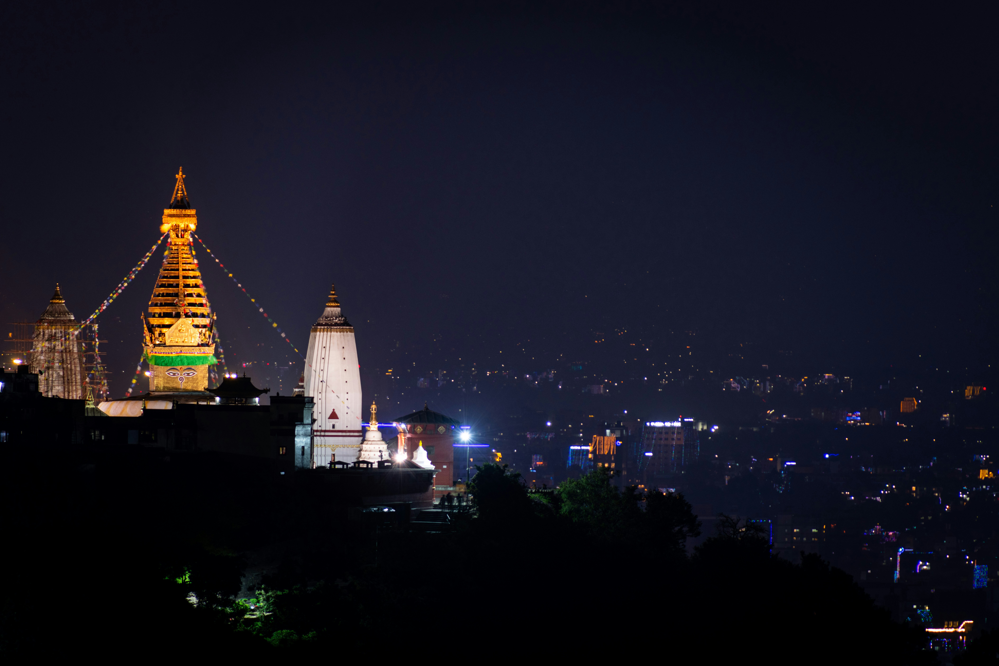
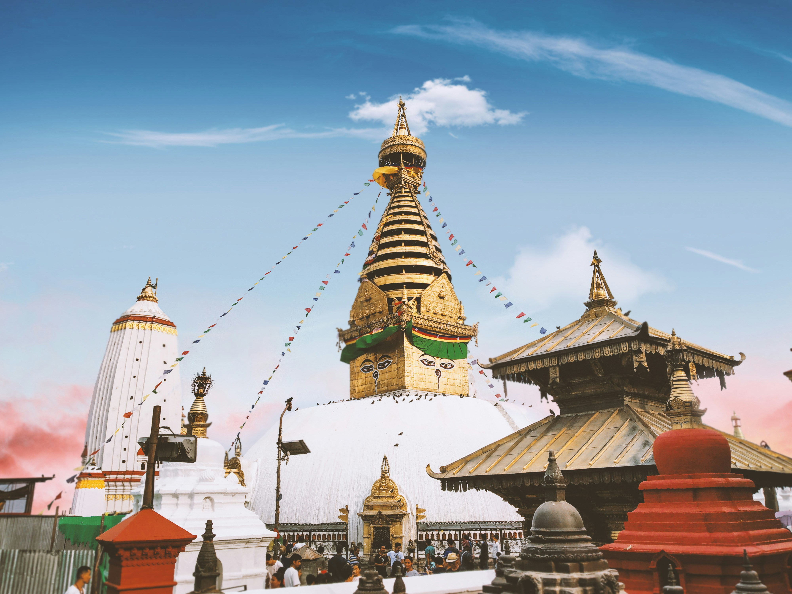

Gallery
 

 




Ancient religious complex atop a hill in Kathmandu Valley, also known as the Monkey Temple, offering panoramic city views.
Location: Kathmandu, Nepal
Type: Stupa and temple complex
UNESCO Status: Part of Kathmandu Valley World Heritage Site since 1979
Significance: One of the oldest and most sacred Buddhist pilgrimage sites in Nepal.
Established: Estimated 5th century CE
Swayambhunath is considered a sacred pilgrimage site for both Buddhists and Hindus. The site’s name means “Self-Existent One,” referring to the belief that the hill rose spontaneously from a primordial lake that once covered the Kathmandu Valley. It has been a center of learning, meditation, and worship for centuries.


